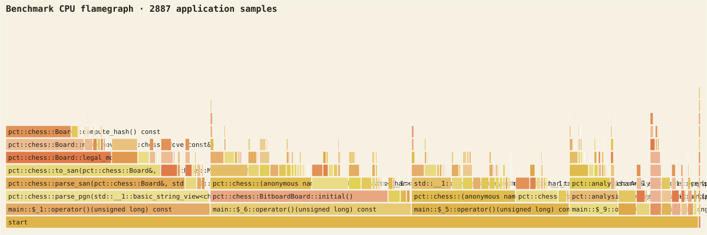

Apple Instruments Time Profiler captured 2,887 arm64 application stacks from the reproducible benchmark. Run scripts/profile-benchmarks.sh to rebuild the binary, capture a fresh trace, export XML, and regenerate the SVG without third-party profiling dependencies.

Observed hotspots
PGN reconstruction and FEN parsing dominate this mixed microbenchmark, followed by repeated board construction in lookup fixtures and cache-key FEN hashing. These are expected from the operation counts. Replay did not dominate, so mmap was rejected. Peak RSS observed by polling the benchmark process was 5,896 KiB.
Allocation and contention interpretation
FEN/PGN paths allocate strings and move vectors; future work can introduce reusable scratch storage only if an end-to-end workload shows user-visible pressure. Queue latency falls as synthetic workers increase, and the reserved historical quota prevents throughput gains from consuming interactive capacity.